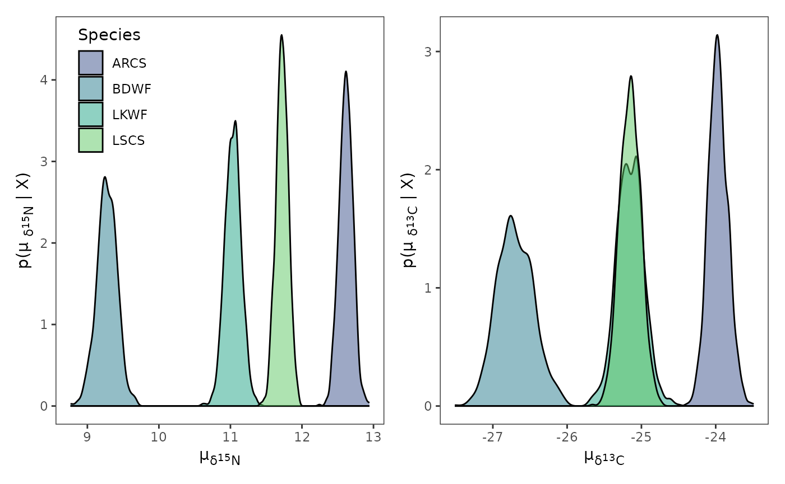
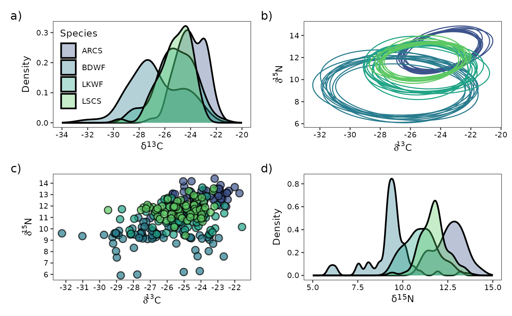

Using {nichetools} with nicheROVER
Benjamin L. Hlina
Updated: 2024-09-06
Source:vignettes/using-nichetools-with-the-package-nicheROVER.Rmd
using-nichetools-with-the-package-nicheROVER.RmdOur Objectives
The purpose of this vignette is to use {nicheROVER} and {nichetools} to extract and then visualize estimates of trophic niche size and similarities for multiple freshwater fish using {ggplot2}.
This vignette can be used for additional purposes including estimating niche size and similarities among different groups of aquatic and/or terrestrial species. Furthermore, niche size and similarities for different behaviours exhibited within a population can be made using behavioural data generated from acoustic telemetry (e.g., differences in habitat occupancy).
Bring in trophic niche data
First we will load the necessary packages to preform the analysis and visualization. We will use {nicheROVER} and {nichetools} to preform the analysis. We will use {dplyr}, {tidyr}, and {purrr} to manipulate data and iterate processes. Lastly, we will use {ggplot2}, {ggtext}, and {patchwork} to plot, add labels, and arrange plots.
I will add that many of the dplyr and tidyr functions and processes can be replaced using {data.table} which is great when working with large data sets.
{
library(dplyr)
library(ggplot2)
library(ggtext)
library(ggh4x)
library(nicheROVER)
library(nichetools)
library(patchwork)
library(purrr)
library(stringr)
library(tidyr)
}For the purpose of the vignette we will be using the
fish data frame that is available within
nicheROVER. We will remove
34S
for simplicity of the vignette. If more than two isotopes or metrics are
being used to compare niche sizes and similarities, please use the
functions for each pairing. Right now some functions (i.e.,
niche_ellipse()) in nichetools doesn’t have
the ability to work with more than two isotopes. This will become a
feature at some point but for now. Please be patient and use the
functions for each pairing you have.
We will first use the function janitor::clean_names() to
clean up column names. For your purposes you will need to replace fish
with your data frame either by loading a csv, rds, or qs, with your
data. You can do this multiple ways, I prefer using
readr::read_csv() but base R’s read.csv()
works perfectly fine.
df <- fish %>%
janitor::clean_names()If there are any isotopic values that did not run and are
NA, they will need to be removed because
nicheROVER’s functions will not accommodate values of
NA.
Estimate posterior distribution with Normal-Inverse-Wishart (NIW) priors.
We will take 1,000 posterior samples for each group. You can change this but suggest nothing less than 1,000.
nsample <- 1000We will then split the data frame into a list with each species as a
data frame object within the list, We will then iterate over the list,
using map() from {purrr}, to estimate posterior
distribution using Normal-Inverse-Wishart (NIW) priors.
Extract μ values
We will use extract_mu()to extract posteriors for
estimates. The default output of extract_mu() is long
format which works for plotting with {ggplot2} and other functions in
{nichetools}. If we want wide format we can specify the argument
format with "wide", however, it is unlikely
you will need this data in wide format.
df_mu <- extract_mu(fish_par)The default output will be lacking some info for plotting. We will need to add in a column that is the element abbreviation and neutron number to be used in axis labeling.
Extract Σ values
We will use extract_sigma() to extract posterior
estimates for
.
The default output of extract_sigma() is wide format which
doesn’t work for plotting with {ggplot2} but does work other functions
in {nichetools}. If we want long for plotting we can specify the
argument format with "long".
df_sigma <- extract_sigma(fish_par)For plotting we will need the extracted values to be in long format. We also need to remove values for when the both isotope columns are the same isotope.
df_sigma_cn <- extract_sigma(fish_par,
data_format = "long") %>%
filter(id != isotope)Plot posterior distrubtion of μ and Σ
For most plotting within this vignette, I will split()
the data frame by isotope, creating a list that I will then use
imap() to iterate over the list to create plots. We will
use geom_density() to represent densities for both
and
.
Plot objects will then be stored in a list.
First we will plot for each isotope. We will use {patchwork} to configure plots for multi-panel figures. This package is phenomenal and uses math operators to configure and manipulate the plots to create multi-panel figures.
For labeling we are also going to use element_markdown()
from {ggtext} to work with
the labels that are needed to correctly display the isotopic signature.
If you are working other data please replace.
posterior_plots <- df_mu %>%
split(.$isotope) %>%
imap(
~ ggplot(data = ., aes(x = mu_est)) +
geom_density(aes(fill = sample_name), alpha = 0.5) +
scale_fill_viridis_d(begin = 0.25, end = 0.75,
option = "D", name = "Species") +
theme_bw() +
theme(panel.grid = element_blank(),
axis.title.x = element_markdown(),
axis.title.y = element_markdown(),
legend.position = "none",
legend.background = element_blank()
) +
labs(
x = paste("\u00b5<sub>\U03B4</sub>", "<sub><sup>",
unique(.$neutron), "</sup></sub>",
"<sub>",unique(.$element), "</sub>", sep = ""),
y = paste0("p(\u00b5 <sub>\U03B4</sub>","<sub><sup>",
unique(.$neutron), "</sub></sup>",
"<sub>",unique(.$element),"</sub>",
" | X)"), sep = "")
)
posterior_plots$d15n +
theme(legend.position = c(0.18, 0.82)) +
posterior_plots$d13c
For labeling purposes we need to add columns that are the element
abbreviation and neutron number. I do this by using
case_when() which are vectorized if else statements.
df_sigma_cn <- df_sigma_cn %>%
mutate(
element_id = case_when(
id == "d15n" ~ "N",
id == "d13c" ~ "C",
),
neutron_id = case_when(
id == "d15n" ~ 15,
id == "d13c" ~ 13,
),
element_iso = case_when(
isotope == "d15n" ~ "N",
isotope == "d13c" ~ "C",
),
neutron_iso = case_when(
isotope == "d15n" ~ 15,
isotope == "d13c" ~ 13,
)
)Next we will plot the posteriors for .
sigma_plots <- df_sigma_cn %>%
group_split(id, isotope) %>%
imap(
~ ggplot(data = ., aes(x = post_sample)) +
geom_density(aes(fill = sample_name), alpha = 0.5) +
scale_fill_viridis_d(begin = 0.25, end = 0.75,
option = "D", name = "Species") +
theme_bw() +
theme(panel.grid = element_blank(),
axis.title.x = element_markdown(),
axis.title.y = element_markdown(),
legend.position = "none"
) +
labs(
x = paste("\U03A3","<sub>\U03B4</sub>",
"<sub><sup>", unique(.$neutron_id), "</sub></sup>",
"<sub>",unique(.$element_id),"</sub>"," ",
"<sub>\U03B4</sub>",
"<sub><sup>", unique(.$neutron_iso), "</sub></sup>",
"<sub>",unique(.$element_iso),"</sub>", sep = ""),
y = paste("p(", "\U03A3","<sub>\U03B4</sub>",
"<sub><sup>", unique(.$neutron_id), "</sub></sup>",
"<sub>",unique(.$element_id),"</sub>"," ",
"<sub>\U03B4</sub>",
"<sub><sup>", unique(.$neutron_iso), "</sub></sup>",
"<sub>",unique(.$element_iso),"</sub>", " | X)", sep = ""),
)
)
sigma_plots[[1]] +
theme(legend.position = c(0.1, 0.82))
Estimate niche ellipse
We then will use niche_ellipse() to easily extract
ellipse for each
estimate (i.e., 1000). If you are to have additional isotopes or
metrics, you will need to create mu and sigma objects for each pairing,
as currently this function only handles two isotopes. In the future,
there likely will be the ability to specify the number of isotopes you
have with the default being two. The reason for the lack of
functionality is ellipse::ellipse() can only work within
two-dimensions, not three, so you will have to create multiple
ellipse() calls for each combination of isotopes or metrics
and I haven’t had the time to implement this. The function will also
tell you how long it took to process as with large sets of isotope data
it is nice to know the time it takes for the function to work. The
function also has the argument random which by default is
set to TRUE. This argument randomly subsamples and returns
10 ellipse estimates out of the total number of samples taken in this
case it is 1,000. The set_seed argument allows you to
change the set.seed value by giving a numerical value to
make the results of the function reproducable, default is a random
value. I highly suggest using set_seed otherwise it will subsample
different values, there is no default value because CRAN will not allow
for a default value. You can change the number of subsamples but 10
seems pretty standard. If you’d like all 1,000 ellipses you can set
random to FALSE.
ellipse_df <- niche_ellipse(dat_mu = df_mu, dat_sigma = df_sigma,
set_seed = 4)
#> → Total time processing was 0.06 secsPlot ellipses, densities of each istope, and isotope biplot
We will first plot the ellipse for each sample_name
ellipse_plots <- ggplot() +
geom_polygon(data = ellipse_df,
mapping = aes(x = d13c, y = d15n,
group = interaction(sample_number, sample_name),
color = sample_name),
fill = NA,
linewidth = 0.5) +
scale_colour_viridis_d(begin = 0.25, end = 0.75,
option = "D", name = "species",
) +
scale_x_continuous(breaks = rev(seq(-20, -40, -2))) +
scale_y_continuous(breaks = seq(6, 16, 2)) +
theme_bw(base_size = 10) +
theme(axis.text = element_text(colour = "black"),
panel.grid = element_blank(),
legend.position = "none",
legend.title = element_text(hjust = 0.5),
legend.background = element_blank()) +
labs(x = expression(paste(delta ^ 13, "C")),
y = expression(paste(delta ^ 15, "N")))We need to turn df into long format to iterate over
using imap() to easily create density plots. You will
notice that I again use case_when() to make columns of
element abbreviations and neutron numbers that will be used in plot
labeling.
iso_long <- df %>%
pivot_longer(cols = -species,
names_to = "isotope",
values_to = "value") %>%
mutate(
element = case_when(
isotope == "d15n" ~ "N",
isotope == "d13c" ~ "C",
),
neutron = case_when(
isotope == "d15n" ~ 15,
isotope == "d13c" ~ 13,
)
)We will then make density plots for each isotope using
geom_density()
iso_density <- iso_long %>%
group_split(isotope) %>%
imap(
~ ggplot(data = .) +
geom_density(aes(x = value,
fill = species),
alpha = 0.35,
linewidth = 0.8) +
scale_fill_viridis_d(begin = 0.25, end = 0.75,
option = "D", name = "Species") +
theme_bw(base_size = 10) +
theme(axis.text = element_text(colour = "black"),
panel.grid = element_blank(),
legend.position = c(0.15, 0.55),
legend.background = element_blank(),
axis.title.x = element_markdown(family = "sans")) +
labs(x = paste("\U03B4",
"<sup>", unique(.$neutron), "</sup>",unique(.$element),
sep = ""),
y = "Density")
)
d13c_density <- iso_density[[1]] +
scale_x_continuous(breaks = rev(seq(-20, -34, -2)),
limits = rev(c(-20, -34)))
d15n_density <- iso_density[[2]] +
scale_x_continuous(breaks = seq(5, 15, 2.5),
limits = c(5, 15)) +
theme(
legend.position = "none"
)Lastly we will use geom_point() to make isotopic
biplot.
iso_biplot <- ggplot() +
geom_point(data = df, aes(x = d13c, y = d15n,
fill = species),
shape = 21, colour = "black",
stroke = 0.8,
size = 3, alpha = 0.70) +
scale_fill_viridis_d(begin = 0.25, end = 0.75,
option = "D", name = "species") +
scale_x_continuous(breaks = rev(seq(-20, -39, -1))) +
scale_y_continuous(breaks = seq(5, 17, 1)) +
theme_bw(base_size = 10) +
theme(axis.text = element_text(colour = "black"),
panel.grid = element_blank(),
legend.position = "none",
legend.background = element_blank()) +
labs(x = expression(paste(delta ^ 13, "C")),
y = expression(paste(delta ^ 15, "N")))Use {patchwork} to make ellipse, density, and biplots into a paneled figure.
We can also use the function plot_annotation() to add
lettering to the figure that can be used in the figure description. To
maneuver where plot_annotation() places the lettering, we
need to add plot.tag.position = c(x, y) to the
theme() call in every plot.
d13c_density + ellipse_plots + iso_biplot + d15n_density +
plot_annotation(tag_levels = "a",
tag_suffix = ")")
Determine the 95% niche similarties for each species
We will use the overlap() function from {nicheROVER})
to estimate the percentage of similarity among species. We will set
overlap to assess based on 95% similarities.
over_stat <- overlap(fish_par, nreps = nsample, nprob = 1000,
alpha = 0.95)We then are going transform this output to a data frame using
extract_overlap() plotting so we can assess overall
similarities among species.
over_stat_df <- extract_overlap(data = over_stat) %>%
mutate(
niche_overlap_perc = niche_overlap * 100
)We then are going to take our newly made data frame and extract out the mean percentage of similarities and the 2.5% and 97.5% quarantines. We plot these as lines and dotted lines on our percent similarity density figure.
over_sum <- over_stat_df %>%
group_by(sample_name_a, sample_name_b) %>%
summarise(
mean_niche_overlap = round(mean(niche_overlap_perc), digits = 2),
qual_2.5 = round(quantile(niche_overlap_perc, probs = 0.025, na.rm = TRUE), digits = 2),
qual_97.5 = round(quantile(niche_overlap_perc, probs = 0.975, na.rm = TRUE), digits = 2)
) %>%
ungroup() %>%
pivot_longer(cols = -c(sample_name_a, sample_name_b, mean_niche_overlap),
names_to = "percentage",
values_to = "niche_overlap_qual") %>%
mutate(
percentage = as.numeric(str_remove(percentage, "qual_"))
) We are now going to use ggplot(),
geom_density(), and fact_grid2() from {ggh4x}.
ggplot(data = over_stat_df, aes(x = niche_overlap_perc)) +
geom_density(aes(fill = sample_name_a)) +
geom_vline(data = over_sum, aes(xintercept = mean_niche_overlap),
colour = "black", linewidth = 1) +
geom_vline(data = over_sum, aes(xintercept = niche_overlap_qual),
colour = "black", linewidth = 1, linetype = 6) +
scale_fill_viridis_d(begin = 0.25, end = 0.75,
option = "D", name = "Species",
alpha = 0.35) +
facet_grid2(sample_name_a ~ sample_name_b,
independent = "y",
scales = "free_y") +
theme_bw() +
theme(
panel.grid = element_blank(),
axis.text = element_text(colour = "black"),
legend.background = element_blank(),
strip.background = element_blank()
) +
labs(x = paste("Overlap Probability (%)", "\u2013",
"Niche Region Size: 95%"),
y = "p(Percent Overlap | X)")
Estimate overall niche size
We are now going to estimate the overall size of the niche for each
posterior sample by using the function extract_niche_size()
which is a wrapper around niche.size() and some data
manipulation functions.
niche_size <- extract_niche_size(fish_par)We can calculate the mean niche size, standard deviation, and standard error.
Plot niche size
We will now use geom_violin(),
geom_point(), and geom_errorbar() to plot the
distribution for niche size for each species.
ggplot(data = niche_size) +
geom_violin(
aes(x = sample_name, y = niche_size),
width = 0.2) +
geom_point(data = niche_size_mean, aes(x = sample_name, y = mean_niche)) +
geom_errorbar(data = niche_size_mean, aes(x = sample_name,
ymin = mean_niche - sem_niche,
ymax = mean_niche + sem_niche),
width = 0.05) +
theme_bw(base_size = 15) +
theme(panel.grid = element_blank(),
axis.text = element_text(colour = "black")) +
labs(x = "Species",
y = "Niche Size") 
Now that we have our niche sizes and similarities determined we can make inferences about the species, trophic similarities, and the ecosystem.